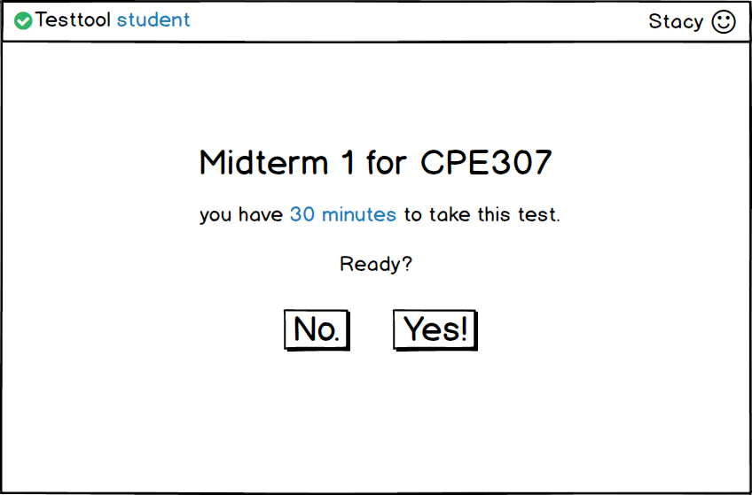

The instuctor will see the same pages as the student does when they choose to take a test.
The difference being that when they click 'Start' the timer doesn't run.
There wont be much different between an in class test and an out of school test except that a proctor would be able to start the test when they wanted, and the at home test would be open at a certain time.

Figure 2.5-9: Test Start Screen.
Sketch of the remainder: